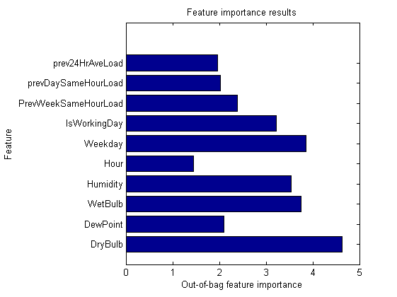

Load Forecasting using Bagged Regression Trees
This example demonstrates an alternate model for building relationships between historical weather and load data to build and test a short term load forecasting. The model used is a set of aggregated Regression Trees.
Contents
- Import Data
- Generate Predictor Matrix
- Split the dataset to create a Training and Test set
- Build the Bootstrap Aggregated Regression Trees
- Determine Feature Importance
- Build the Final Model
- Save Trained Model
- Test Results
- Compute Prediction
- Compare Forecasted Load and Actual Load
- Compute Model Forecast Metrics
Import Data
The data set used is a table of historical hourly loads and temperature observations from the AEMO & BOM for Sydney/NSW for the years 2006 to 2010. The weather information includes the dry bulb, wet bulb temperatures dew point & humidity
load ausdata
Import list of holidays
[num, text] = xlsread('..\Data\Holidays2.xls');
holidays = text(2:end,1);
Generate Predictor Matrix
The function genPredictors generates the predictor variables used as inputs for the model. For short-term forecasting these include
- Dry bulb temperature
- Dew point
- Wet bulb temperature
- Humidity
- Hour of day
- Day of the week
- A flag indicating if it is a holiday/weekend
- Previous day's average load
- Demand from the same hour the previous day
- Demand from the same hour and same day from the previous week
If the goal is medium-term or long-term load forecasting, only the inputs hour of day, day of week, time of year and holidays can be used deterministically. The weather/load information would need to be specified as an average or a distribution
% Select forecast horizon term = 'short'; [X, dates, labels] = genPredictors2(data, term, holidays);
Split the dataset to create a Training and Test set
The dataset is divided into two sets, a training set which includes data from 2004 to 2007 and a test set with data from 2008. The training set is used for building the model (estimating its parameters). The test set is used only for forecasting to test the performance of the model on out-of-sample data.
% Create training set trainInd = data.NumDate < datenum('20010-01-01'); trainX = X(trainInd,:); trainY = data.SYSLoad(trainInd); % Create test set and save for later testInd = data.NumDate >= datenum('2010-01-01'); testX = X(testInd,:); testY = data.SYSLoad(testInd); testDates = dates(testInd); save Data\testSet_aus testDates testX testY clear X data trainInd testInd term holidays dates ans
Build the Bootstrap Aggregated Regression Trees
The function TreeBagger is used to build the model, ie. a set of regression trees each with a different set of rules for performing the non-linear regression. We initially start by building an aggregate of 20 such trees, with a minimum leaf size of 40. The larger the leaf size the smaller the tree. This provides a control for overfitting and performance.
model = TreeBagger(20, trainX, trainY, 'method', 'regression', 'minleaf', 40) simpleTree = prune(model.Trees{1}, 1330); view(simpleTree, 'names', labels);
model =
Ensemble with 20 bagged decision trees:
Training X: [87648x10]
Training Y: [87648x1]
Method: regression
Nvars: 10
NVarToSample: 4
MinLeaf: 40
FBoot: 1
SampleWithReplacement: 1
ComputeOOBPrediction: 0
ComputeOOBVarImp: 0
Proximity: []
Determine Feature Importance
Of each of the predictors, which ones provide the most predictive power? Turning on the oobVarImp parameter shows you out-of-bag estimates of this relative feature (input) importance.
model = TreeBagger(20, trainX, trainY, 'method', 'regression', ... 'oobvarimp', 'on', 'minleaf', 30); figure(2); barh(model.OOBPermutedVarDeltaError); ylabel('Feature'); xlabel('Out-of-bag feature importance'); title('Feature importance results'); set(gca, 'YTickLabel', labels)
Build the Final Model
Given our analysis of parameters, we may wish to now build the final model with 20 trees, a leaf size of 20 and all of the features
model = TreeBagger(20, trainX, trainY, 'method', 'regression', 'minleaf', 20);
Save Trained Model
We can compact the model (to remove any stored training data) and save for later reuse
model = compact(model); save Models\TreeModel_aus model
Test Results
Load in the model and test data and run the treeBagger forecaster and compare to actual load.
clear cd Models load Models\TreeModel_aus cd .. cd Data load Data\testSet_aus cd ..
Compute Prediction
Predict the load for 2008 using the model trained on load data from 2007 and before.
forecastLoad = predict(model, testX);
Compare Forecasted Load and Actual Load
Create a plot to compare the actual load and the predicted load as well as the forecast error.
ax1 = subplot(2,1,1); plot(testDates, [testY forecastLoad]); ylabel('Load'); legend({'Actual', 'Forecast'}); legend('boxoff') ax2 = subplot(2,1,2); plot(testDates, testY-forecastLoad); xlabel('Date'); ylabel('Error (MWh)'); linkaxes([ax1 ax2], 'x'); dynamicDateTicks([ax1 ax2], 'linked')
Undefined function 'dynamicDateTicks' for input arguments of type 'double'. Error in LoadScriptTrees_aus (line 133) dynamicDateTicks([ax1 ax2], 'linked')
Compute Model Forecast Metrics
In addition to the visualization we can quantify the performance of the forecaster using metrics such as mean average error (MAE), mean average percent error (MAPE) and daily peak forecast error.
err = testY-forecastLoad; errpct = abs(err)./testY*100; fL = reshape(forecastLoad(1:end-1), 48, (length(forecastLoad)-1)/48)'; tY = reshape(testY(1:end-1), 48, (length(testY)-1)/48)'; peakerrpct = abs(max(tY,[],2) - max(fL,[],2))./max(tY,[],2) * 100; fprintf('Mean Average Percent Error (MAPE): %0.2f%% \nMean Average Error (MAE): %0.2f MWh\nDaily Peak MAPE: %0.2f%%\n',... mean(errpct(~isinf(errpct))), mean(abs(err)), mean(peakerrpct))